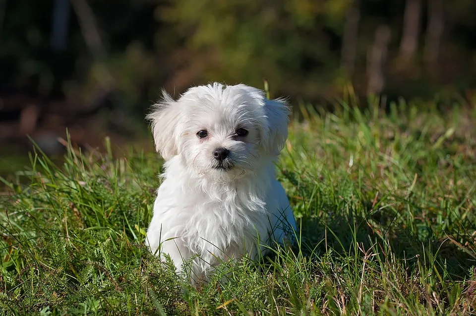
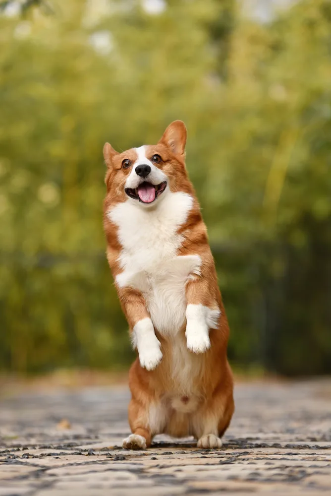
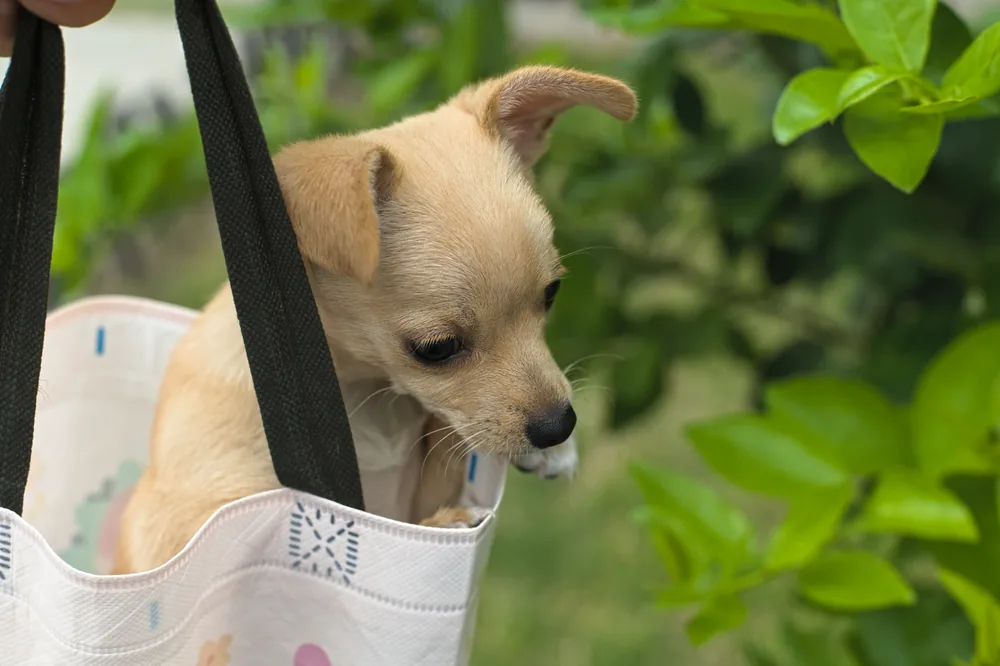
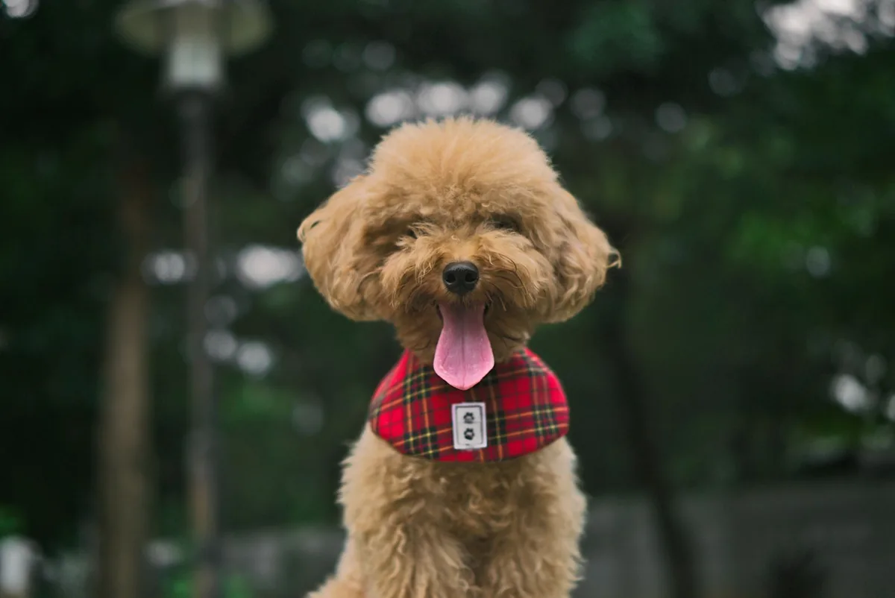

01 / ПОРОДАЗНАКОМИМСЯ БЛИЖЕ ↗Мальтийская болонка
Длинная шерсть нуждается в регулярном уходе; контакт и занятия важны для благополучия собаки.
НЕБОЛЬШИЕ СОБАКИ · БОЛЬШОЕ СЕРДЦЕ
Знакомство с маленькими породами начинается не с выбора щенка, а с понимания друг друга.
Знакомимся без спешки и обязательств
ЗНАКОМСТВО С ПОРОДАМИ
Породы разные, как и мы. Узнайте об особенностях, чтобы понять, какой компаньон может подойти именно вам.

01 / ПОРОДАЗНАКОМИМСЯ БЛИЖЕ ↗Длинная шерсть нуждается в регулярном уходе; контакт и занятия важны для благополучия собаки.

02 / ПОРОДАЗНАКОМИМСЯ БЛИЖЕ ↗Энергичная пастушья порода: ей нужны прогулки, занятия и внимание к физической нагрузке.

03 / ПОРОДАЗНАКОМИМСЯ БЛИЖЕ ↗Маленький размер не отменяет потребности в прогулках, бережном общении и воспитании.

04 / ПОРОДАЗНАКОМИМСЯ БЛИЖЕ ↗Как правило, любит совместные занятия. Кудрявой шерсти нужны расчёсывание и стрижка.
Фотографии иллюстрируют породы, это не объявления о продаже. Авторы и лицензии фотографий.
Что важно знать о заботеПРЕЖДЕ ВСЕГО — ЗАБОТА
Даже самой маленькой собаке нужны время, внимание и подходящие именно ей условия.
Заранее найдите ветеринарного врача и обсудите профилактику, питание и индивидуальные потребности.
Прогулки, общение, отдых и спокойное обучение важны независимо от размера собаки.
Узнавайте об условиях содержания и проверяйте сведения о здоровье и происхождении конкретного животного.
ПЕРВЫЕ ШАГИ
Спокойная подготовка помогает собаке освоиться, а вам — заранее оценить свои возможности.
Уберите провода, бытовую химию, лекарства и мелкие предметы; выделите тихое место для отдыха и поставьте миску с водой.
Запланируйте время на прогулки, кормление, сон и постепенное знакомство с домом. Договоритесь с близкими, кто будет заботиться о собаке каждый день и во время вашего отсутствия.
Понадобятся подходящие по размеру шлейка или ошейник и поводок, лежанка, миски и безопасные игрушки. Не забудьте заложить бюджет на корм, уход и ветеринарную помощь.
Обсудите питание, вакцинацию, обработку от паразитов и план осмотра с ветеринаром: рекомендации зависят от возраста, здоровья и условий жизни животного.
ОСОЗНАННЫЙ ВЫБОР
Выбирайте не только по внешности. Условия содержания и история конкретного щенка важнее описания породы.
Отказ показать условия или документы и давление с требованием срочно оплатить — повод остановиться и проверить информацию.
КАТАЛОГ ОБЪЯВЛЕНИЙ
Здесь смогут появиться объявления, когда будут предоставлены и проверены необходимые материалы.
На сайте нет доступных щенков, цен или возможности оставить заявку. Фотографии выше только знакомят с породами.
Как ответственно выбирать щенкаПОЛЕЗНО ЗНАТЬ
Коротко о выборе, подготовке и возможностях этого проекта.
Нет. Это черновой проект: объявлений, цен, контактов продавца и приёма заявок пока нет.
Оцените свой образ жизни, время на прогулки и уход, бюджет и условия дома. Характер и потребности каждой собаки индивидуальны; пообщайтесь с животным до принятия решения.
Попросите ветеринарные документы с отметками о процедурах, а при заявленном происхождении — подтверждающие его документы. Изучите договор и проверьте сведения у выдавшей организации и ветеринара.
Уберите опасные предметы, устройте тихое место для сна, подготовьте воду и подходящие принадлежности. Обсудите питание и дальнейший уход с ветеринарным врачом.
Нет. Это общая информация. Вопросы о здоровье, питании и профилактике конкретной собаки обсудите с ветеринарным врачом.
О ПРОЕКТЕ
«Рядом» — рабочее название чернового проекта. Сейчас это пространство для знакомства с породами и разговора об ответственной заботе.
Сведения о продавце и контакты пока не предоставлены. Реальных объявлений, цен и приёма заявок здесь пока нет. Индивидуальные особенности собак могут отличаться от описания породы.
Вернуться наверх